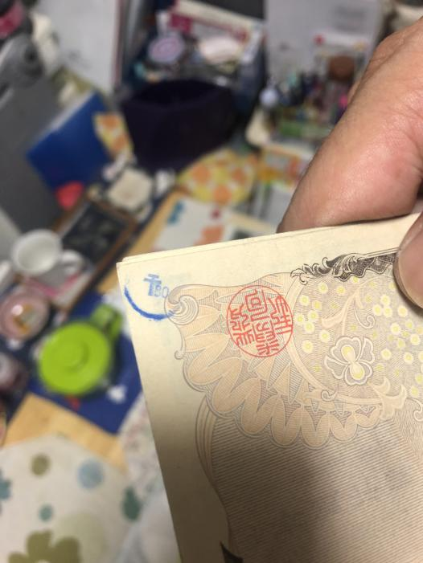

CMOSガバエイム合法化法案
こんばんは。零阪麻琴です。
先週の記事を出した少し後、とある物が始動しました。11月くらいには良い感じに忙しくなりそうです。（笑）
さて、本日の本題です。まずはこちらの画像をご覧ください。

画像の中央をご覧いただくと、謎のマークがあります。十字架の右下に80という数字。
一体何なのかという話なんですが、正直わからん。
昔から「カ＊＊イン」とか、「財務省陰謀論」とかがありましたが、このタイプは全く見たことがない。
筆跡もないので一切の情報が不明。検索してもアルファベットのみのスタンプしか出てこない...詳細求む！
ある意味現金のメリットなのかもしれませんねこれもｗ
現代の仮想通貨とかの隠しメッセージが現代のカ＊＊インとか財務省陰謀論にあたるんでしょうね。
ということで今日は短いですがここまでで。ご読了いただきましてありがとうございました。
よろしければ、当ホームページのブックマーク登録や相互リンク、Instagram、Reality、Twitterのフォローをよろしくお願いします。
Tweet
記事一覧に戻る
Consoles